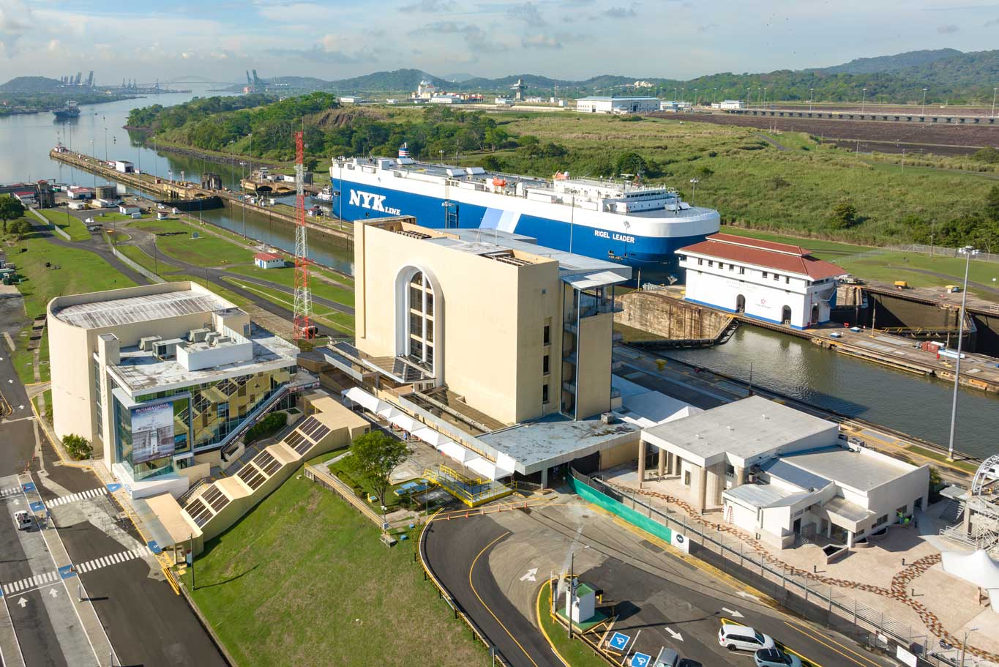
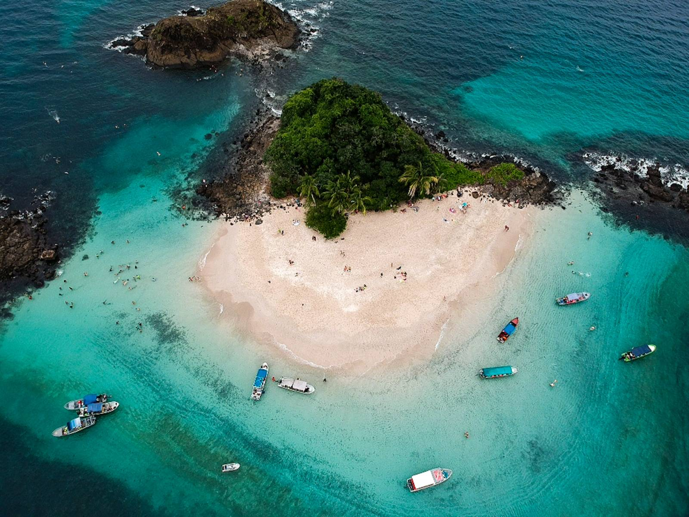
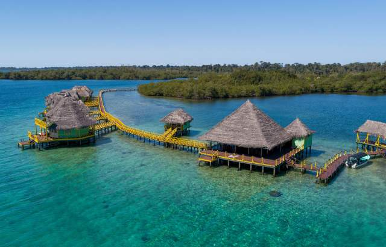

Casco Viejo es el barrio histórico de la Ciudad de Panamá, famoso por sus calles empedradas, arquitectura colonial y vida cultural. Es un sitio recomendado para paseos a pie, restaurantes y museos.
Panamá combina historia, naturaleza y maravillas de ingeniería. Aquí presento algunos sitios turísticos representativos: Casco Viejo, Miraflores (Canal de Panamá), Parque Nacional Coiba y Bocas del Toro.
Casco Viejo es el barrio histórico de la Ciudad de Panamá, famoso por sus calles empedradas, arquitectura colonial y vida cultural. Es un sitio recomendado para paseos a pie, restaurantes y museos.

El Centro de Visitantes de Miraflores permite observar las esclusas (locks) en acción y aprender sobre la historia y operación del Canal. Tiene plataformas de observación y un museo interactivo.

Coiba es un extenso parque nacional marino en el Pacífico, destacado por su biodiversidad, arrecifes y oportunidad para buceo y snorkel.

Bocas del Toro es un archipiélago caribeño famoso por sus playas, turismo de naturaleza, isla-hopping y ambiente relajado.